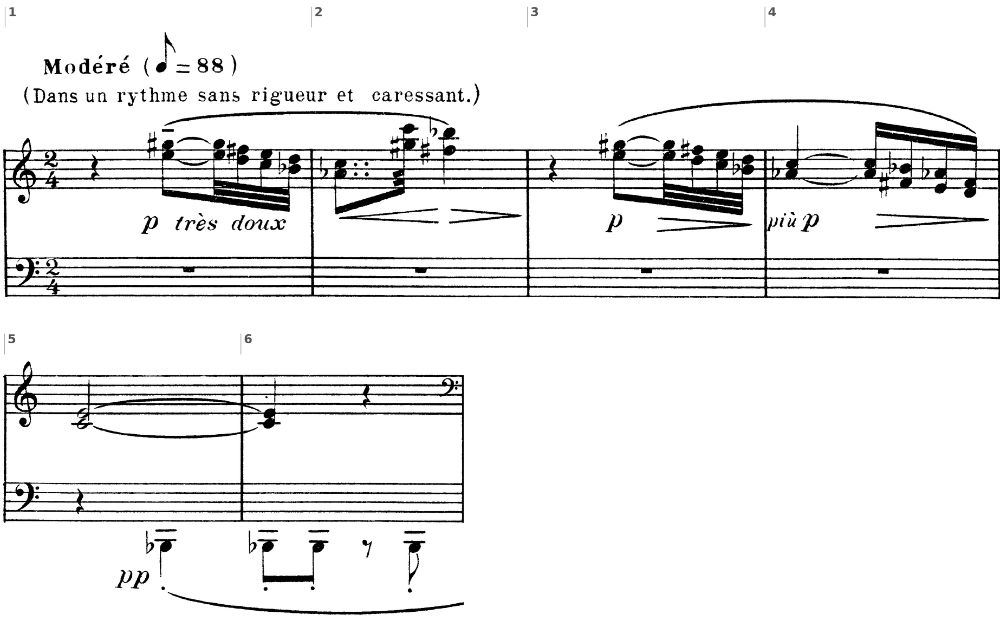
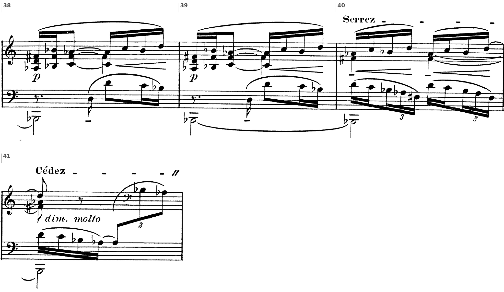

Si restituisce la V5. Poi lo stesso preludio di Debussy letto da due testi: il manuale parte dalla mappa, Natoli dal primo gesto.
Un tempo immobile, statico in cui gli eventi musicali sono semplicemente giustapposti.
D. D’Urso, C. Bertolini, Il linguaggio della musica, 5° anno, p. 261
Si restituiscono i fogli della verifica di lunedì 5 aprile: il basso senza numeri e la melodia da armonizzare. Ciascuno rilegge le due prove e segna a margine, per ogni punto perso, la regola che lo spiega; poi riscrive sul quaderno le battute segnate, accordo per accordo.
1. Il piano tonale: dove si modula, su quale accordo comune, con quale cadenza. 2. Le sigle: i gradi, i rivolti, la doppia cifratura agli accordi comuni. 3. Gli accordi alterati: la napoletana e la sesta eccedente, preparate e risolte. 4. Le note sensibili e le settime, in una voce sola e risolte. 5. Le parallele fra tutte le coppie di voci, le nascoste fra le parti esterne.
D. D’Urso, C. Bertolini, Il linguaggio della musica, 5° anno, lezione 22, pp. 258–261 · E. C. Natoli, Percorsi di analisi musicale, lezione 15, «Voiles, la scrittura modale in Debussy», pp. 293–306.
| il manuale | Natoli | |
|---|---|---|
| da dove parte | dalla macro-forma: tre sezioni, poi le sottosezioni | dal primo gesto, l’arabesco delle bb. 1–2 |
| le unità | temi P e S, idee x, y, z, frasi a, b, b′: lettere e battute | idee e cellule, e come derivano l’una dall’altra |
| le altezze | la scala esatonale e la pentatonica di mi♭; i suoni cardine | due gamme esatonali contigue, a volte difettive |
| il tempo | «un tempo immobile»: eventi giustapposti | un percorso: i materiali si sovrappongono, poi si fondono |
| la forma | I bb. 1–41, II 42–47, III 48–64 | 1–41, 42–47, 48–60 (p. 295), con la coda dalla b. 58 (p. 303) |
Il preludio ha 64 battute. Natoli chiude la terza sezione alla b. 60 e poco dopo fa cominciare la coda alla b. 58: in un testo d’analisi i numeri di battuta si controllano sempre sulla partitura, anche quando li scrive un manuale.

La frase a. (bb. 1–6) è costruita sull’idea x: terze parallele intorno alla terza maggiore mi–sol♯, chiusa sulla terza do–mi, al centro della scala esatonale. Alle bb. 5–7 entra l’idea y: il si♭ ribattuto al basso, che nella sottosezione B si rivelerà fondamentale della triade aumentata.
Non sono terze: il sol♯ scritto dopo il la♭ mostra due gamme esatonali distribuite su due voci. Il gesto, un arabesco, torna al silenzio; il si♭ della b. 5 diventa un pedale per tutto il brano, un «polo» che dà la coerenza che il sistema tonale non garantisce più.
Gli stessi dati, due domande diverse: il manuale chiede «che cos’è e dove sta», Natoli «come nasce e dove va».

Sezioni, battute, scale, temi: è la parte del testo che si controlla sulla partitura. Senza, la lettura «lungo il segno» diventa un racconto senza punti di riferimento.
Come i materiali nascono, si sovrappongono, si trasformano; come avviene un passaggio. Senza, la mappa resta uno schema che non dice perché il brano suona così.
Nella prova di tipo A si usano tutti e due, in quest’ordine, e si scrive da quale testo viene ogni lettura. Fra un’ora la lezione 11: l’analisi integrale scritta del primo Interludio marino di Britten.
Compiti per la prossima volta
Sulla partitura di «Voiles» (unità 3, lezione 1) scrivi l’analisi delle bb. 48–64 in due parti: prima la mappa (sezione, scale, materiali, battute), poi il percorso (che cosa torna, come si trasforma, come finisce). Dieci–quindici righe in tutto, con le battute.
Sul quaderno, a matita. La foto del lavoro finito va su Classroom. Nel Workbook: apri l’esercizio C5-U9-L10-11 ↗
Compiti per la prossima volta
Ogni pezzo a tempo, senza fermarti: il parlato a nomi, il cantato prendendo il primo suono dalla tastiera, il ritmico battendo la pulsazione.
Scrivi la melodia sul quaderno, in chiave di violino: otto battute in 9/8, la maggiore. Il primo suono è la. Prima il riferimento, poi tutto due volte, ogni coppia di battute due volte, il collegamento 1–4, 3–6 e 5–8, e tutto per controllare.
Il riferimento: accordo di tonica e primo suono
Il dettato · otto battute
Le sezioni (riferimento, tutto, le coppie, il collegamento) si ascoltano una per una e si ripetono quanto serve; le fasi fanno la procedura della classe, con gli annunci e le pause, da qualunque punto.
Sul quaderno scrivi in testa la sigla C5-D-U09-L10. Si corregge all’inizio della prossima lezione.
Compiti per la prossima volta
Scrivi un contrappunto di seconda specie (due note contro una) sotto il canto fermo, in modo eolio (finale la): otto battute. Comincia su una consonanza perfetta, alla cadenza la sensibile sale alla finale, niente quinte e ottave consecutive.
Sul quaderno, con la sigla C5-CP-U09-L10 in testa; la foto va su Classroom.
Realizza a quattro parti il basso senza numeri: sedici battute in 4/4, mi♭ maggiore. Trova tu l’accordo di ogni nota (la regola dell’ottava è il punto di partenza) e scrivilo sotto; poi il soprano, poi le voci interne. Accordi che puoi usare: tutto quello studiato, e una modulazione a un tono vicino. Il basso modula: trova dove, e in quale tonalità arriva.
Sul quaderno, con la sigla C5-BD-U09-L10 in testa; la foto va su Classroom.
Armonizza a quattro parti il canto dato: sedici battute in 4/4, la maggiore. Prima le cadenze, poi il basso per intero, e solo alla fine contralto e tenore. Accordi che puoi usare: tutto quello studiato, e una modulazione a un tono vicino.
Sul quaderno, con la sigla C5-CD-U09-L10 in testa; la foto va su Classroom.
Scritto: «Voiles», bb. 48–64: la mappa e il percorso (Workbook, esercizio C5-U9-L10-11), sul quaderno; la foto va su Classroom. Solfeggio dal quaderno di lettura: cantato n. 588, 589 (a tempo, senza fermarsi). Dettato C5-D-U09-L10 dalla pagina della lezione (sezioni da ascoltare, o le fasi della procedura guidata), sul quaderno con la sigla. Contrappunto di seconda specie sul canto fermo (C5-CP-U09-L10). Basso senza numeri da realizzare a quattro parti (C5-BD-U09-L10). Canto dato da armonizzare a quattro parti (C5-CD-U09-L10).
In classe
Si prende il tono dalla tastiera, si canta insieme; poi a gruppi.
Apri il n. 586 nel quaderno di lettura ↗ chiave di violino · 6/8 · do maggiore
Apri il n. 587 nel quaderno di lettura ↗ chiave di violino · 3/4 · fa maggiore